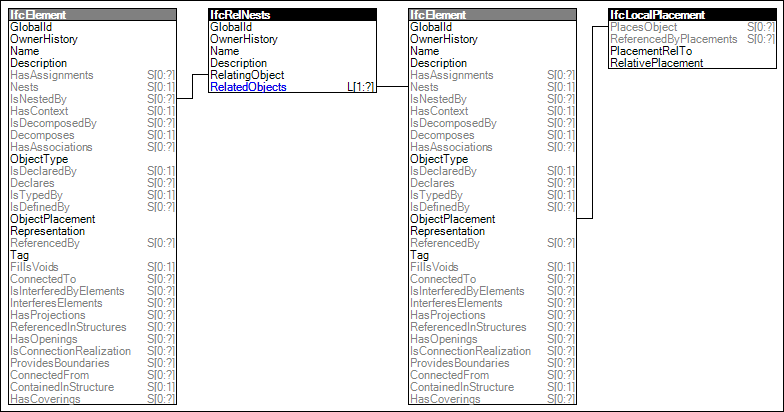

Link to this page
Link to this pageProvision of a nesting structure where the element, representing the host, has connectable components represented by other elements.
The nesting structure then provides the following:
The hosted component should not be contained in the spatial hierarchy, i.e. the concept Spatial Containment shall not be used at the level of hosted components. The hosted component is contained in the spatial structure by the spatial containment of its host.
Examples of element nesting include:
Element nesting should be used for cases where the hosting element has a specific position for attaching other elements of a particular type or form factor where there is no port connection. Ports should be used for scenarios where there is any distribution flow between objects (e.g. electricity, liquid, air/gas). For all other physical connections, the IfcRelConnectsElements relationship and its subtypes should be used.
EXAMPLE Electric distribution boards would use ports to connect to contained circuit breakers rather than nesting, because there is an electrical connection between the board and each breaker.
A general rule for using nesting as opposed to aggregation is based on the contents of the manufactured product as ordered according to its specified article number. If the product includes the component (regardless of whether it comes assembled), then it should use aggregation. If the product does not include any such component but is specifically designed for attaching to other components, then it should use nesting.
Figure 36 illustrates an instance diagram.
 |
Figure 36 — Element Nesting |